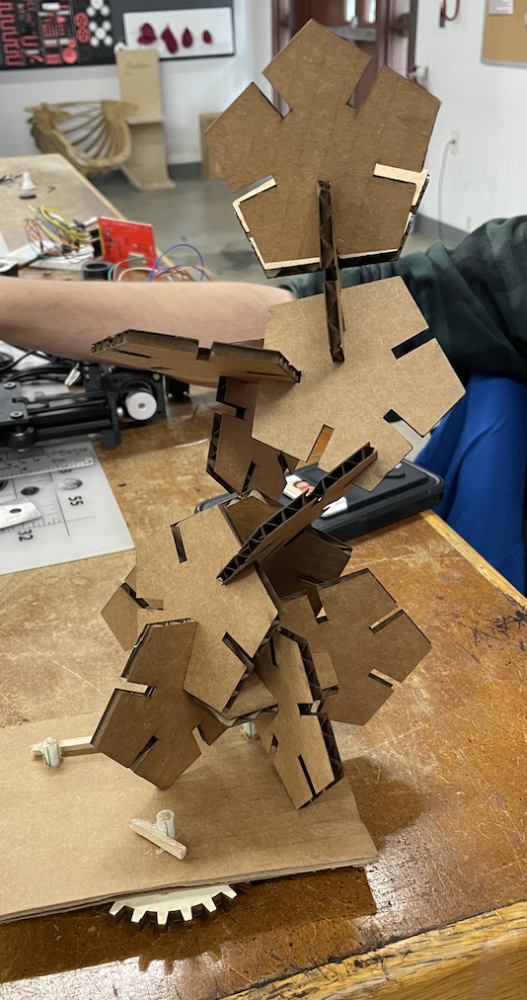
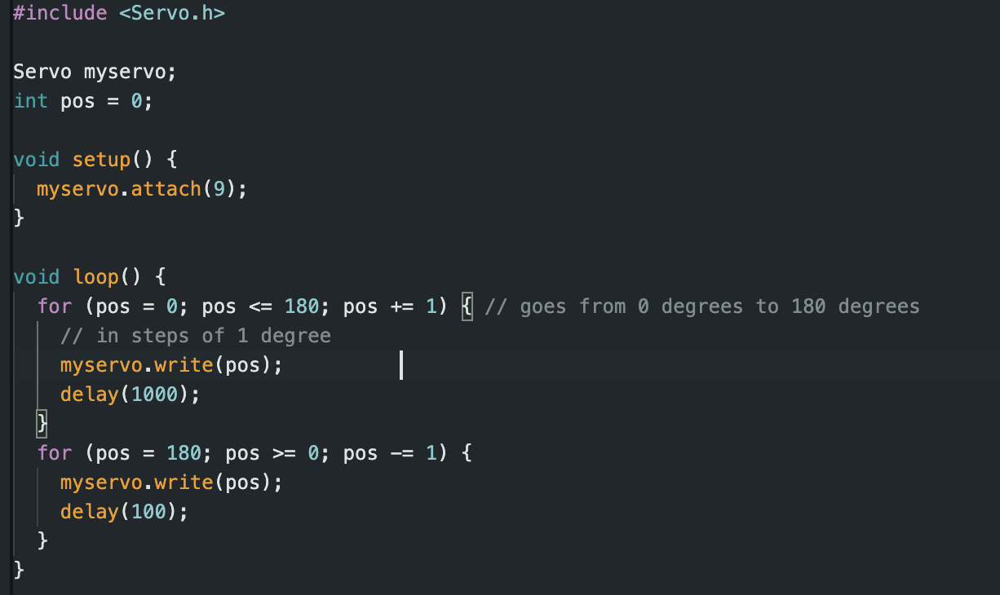

<br>
#### Week 3: Kinetic
<p1>
For the kinetic Sculpture I wanted to build off of things that I had already done and so I utilized the press-fit kit
that I made in week 2. I added some gears to it and added a base compenent that the Sculpture can rest on. I then attached
a servo motor to it in order to make it operational.
</p1>

<p1>
Here is the code I used in order to make the servo motor move. I made it so that it will turn 180 degrees in one
direction and then stop and turn 180 degrees in the other direction.
</p1>
